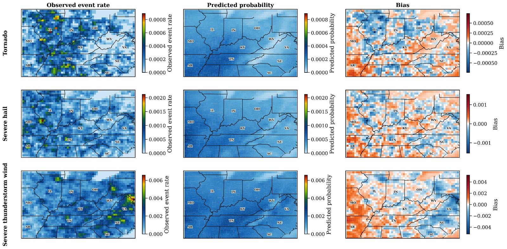
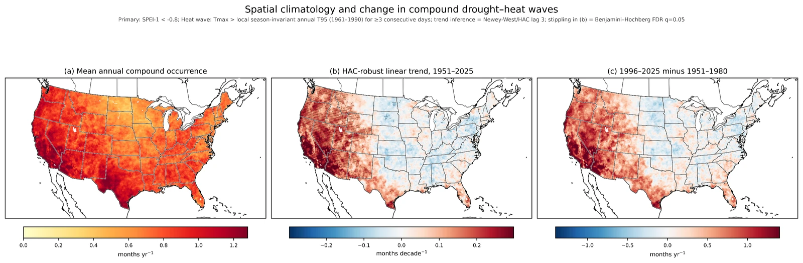
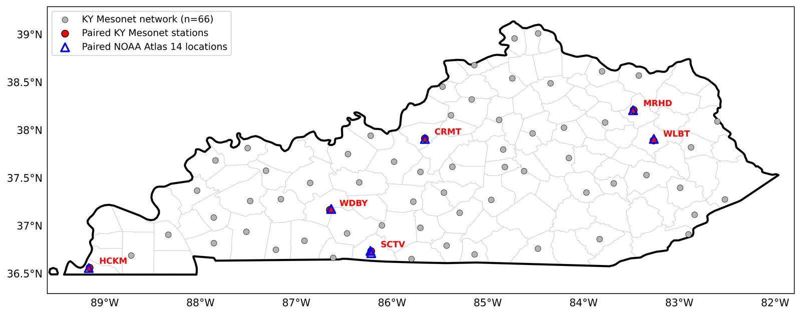
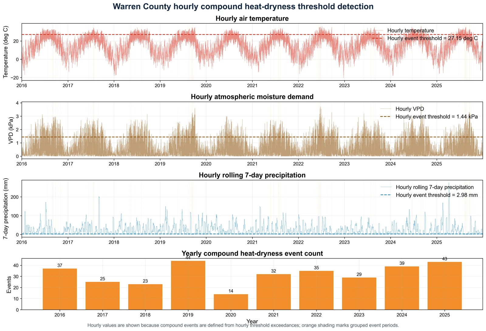

Severe storms & machine learning
A 30-year ERA5 framework for estimating tornado, severe-hail, and severe-wind occurrence across the Ohio River Basin.
Ohio River Basin · 1996–2025Submitted to AIES
Project portfolio
Explore work across severe weather, climate extremes, numerical modeling, and applied climatology.
7 projects

A 30-year ERA5 framework for estimating tornado, severe-hail, and severe-wind occurrence across the Ohio River Basin.

A 75-year observational analysis of compound drought–heat-wave occurrence, severity, and sensitivity to event definitions.

Comparing high-frequency Kentucky Mesonet observations with NOAA Atlas 14 precipitation-frequency estimates.

Using nested WRF simulations and Stage IV precipitation to study the July 2022 Central Appalachian flood event.

Historical patterns of heat-wave frequency, duration, and intensity across Ghana’s climatic zones.

Station-based seasonality, ERA5 evaluation, long-term trends, and the relationship between climate suitability and visitor arrivals.

Station-based diagnostics of concurrent high temperature and vapor pressure deficit across Kentucky.
No projects match your search. Try another term or research area.